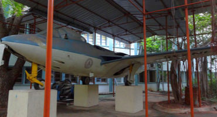
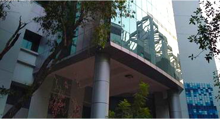
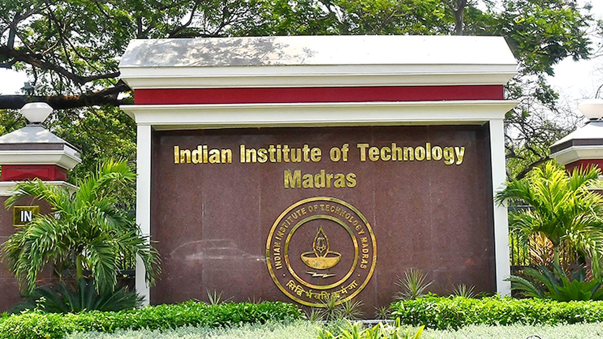
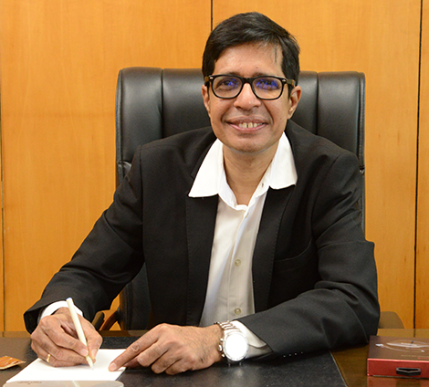

The Indian Institute of Technology Madras is known both nationally and internationally for excellence in technical education, basic and applied research, innovation, entrepreneurship and industrial consultancy. A faculty of international repute, a highly motivated and brilliant student community, excellent technical and supporting staff and an effective administration have all contributed to the pre-eminent status of IIT Madras. The Institute is proud to bear the laureate of being No.1 engineering university in India. More recently, IIT Madras has been given the title of Institute of Eminence.



It is with great pleasure that I write this in the capacity of the Director of this prestigious institute. I thank all the faculty members, students, and staff of IIT Madras for their continuing efforts every day in keeping this distinguished institute of national importance at the top of the ranking scales, year after year.
The role of a campus in ensuring quality learning is of great significance and IIT Madras, which already has a world-class campus, will now ensure it is further infused with the spirit of inclusivity, by celebrating the pluralism of cultures, nationalities, and personalities in a global world. We envision our campus to reflect the ethos of innovation, entrepreneurship, and dynamism of spirit. Each IITian should foster an endless, restless quest to look for solutions to real-world problems thereby contributing to the society we live in and helping our nation truly be "atma-nirbhar" (self-reliant). I envisage the good presence of IIT Madras to be perceptibly felt far beyond the walls of our campus, wherein every corner of our country and thereby the world, is able to tangibly feel the difference we intend to make to society with our leading innovations combined with our determined efforts to make the world a better place to live in.